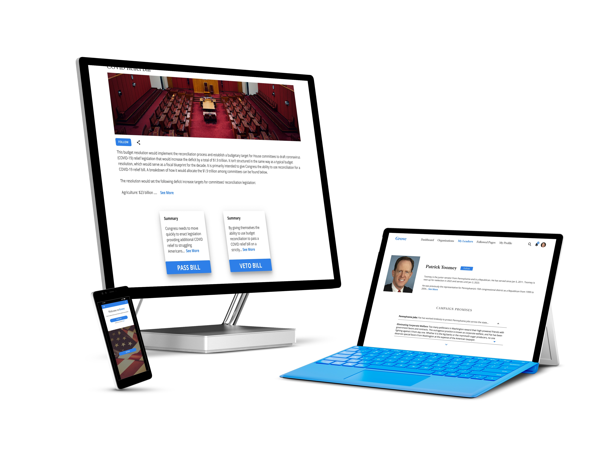

Grove
Grove is a nonprofit startup trying to solve the problem of keeping politicians more accountable and help local government officials improve communication between their citizens.
I'm a UX Designer who spends way too much time thinking about my user's motivations. I find nothing in life gives me as much pleasure as having an epiphany on a Friday night.
Grove is a nonprofit startup trying to solve the problem of keeping politicians more accountable and help local government officials improve communication between their citizens.
Anxious Foodie is a food app designed to help people identify best sellers and to help reduce decisions from hundreds of food choices to a few.
Campers is an app that helps people find people to go road tripping with to destinations all over the USA!